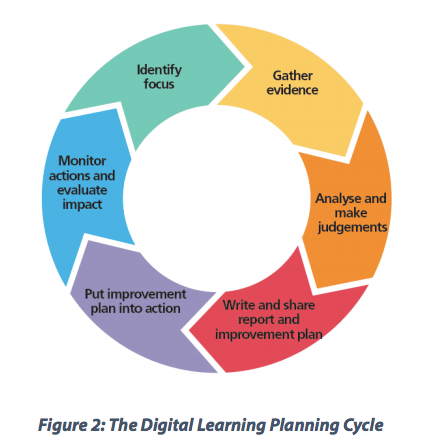

My Learning
My learning strategy was basically following along with the sections one at a time and work on what I could then and their. If I needed something to go over I'd reread the question and look for possible solutions in what was given. A problem I found was going to indepth or finding different solutions for the same issue and then getting lost or getting distracted by something and not focusing on my work I also find it easier to learn watching short videos or looking at examples of what were learning.
I enjoyed when I finally completed each part, when I got to see that what I did actually worked and got to see that though I felt confused that I was doing it. I was on the right path or at least knew what I was trying to do. Though I tend to get distracted and a long term plan really is to just graduate and go from their I'm not sure about what career I want after just that I'm still looking into it.
I've written different schedules for when I'm feeling high energy and low energy so I have times for when I study and rest and depending on the mood with scheduled breaks. A skill I would like to better is my communication skills as I have issues with speaking at times and having a time limit at how long I can be stuck on a issue before I seek help.
Bootcamp
I honestly don’t know what my career path is once I finish this course. I need to look around more and see if anything seems to fit because right now I’m still focusing on my short term goal of just passing and learning as much as I can. My strengths in researching and problem solving are strong and will definitely help a lot when I get stuck in bootcamp but the limitations I’ve found are when reaching out for help and when to do that as well as falling down research holes. Which will definitely hinder me in boot camp as they both feed each other but I’m aware of it and just need to work on it more which I’m going to do as both limitations work together to distract me.
And I know communication and talking to others will definitely be my biggest non-technical challenge at bootcamp as well as sitting still and maybe staying on top of the material.But to a lesser to degree I think that communication is most likely the biggest issue I’ll find in bootcamp. Communication is the human skill I would like to gain from this as I know I’m not really good in this area. I’ve been told by my friends I’m either too blunt or too vague and I know I’m not really good at reading between the lines when someone speaks unless they spell it out for me. So working on communications skills is something I would really like help with.
And my expectations for the bootcamp team I guess are I hope they run it similar to how they ran things during the sprints. Our facilitator checked in with us once a week and helped us by giving us hints and resources so that would be great and since the course will be harder than the sprints maybe more check ins otherwise I don’t know what to expect. My expectations for myself aren’t rather hard, just keep up with the work, stick to your schedules and speak up when necessary which I know will be the hardest for me but is necessary other than that to learn as much as I can though I am looking forward to the challenge bootcamp will present.
